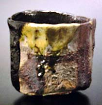

| Raku
Kichizaemon XV
Contemporary Japanese Raku Master
Raku
Kichizaemon the 15th was the son of the 14th Raku master Kakunyu
(1918–1980). He studied sculpture at the Tokyo University
of Fine Arts, graduating in 1973. He became the 15th Raku master
in 1981.
Traditional Japanese
Raku was developed the 16th century by Chojiro for use in the Japanese
tea ceremony. From Chojiro’s time, there has been a succession
of true Raku masters, whose duty it is to carry on the tradition.
According to the custom, this line of Raku masters are the only
ones entitled to call their ware ‘Raku’, however other
potters around the world practice the technique none-the-less. The
current Raku master is Raku Kichizaemon the 15th.
Traditional Raku
is hand formed, not wheel-thrown. The sides and feet are shaven
or cut with a knife or spatula, resulting in a distinctly individual
form. The pieces are bisque-fired, and glazed with a low temperature
lead glaze. They are then quickly refired and removed from the kiln
with tongs while glowing hot.
Legend has it that
the name ‘Raku’, which means ‘enjoyment’
or ‘pleasure’ came from a stamp given to the second
Raku master Jokei by Emperor Toyotomi Hideyoshi. Hideyoshi was a
connoisseur of Raku wares and had the stamp made because Jokei used
a clay called 'Juraku-zuchi', which was dug from the emperors Lustgarten
'Juraku-dai'.
More Articles
More Artists of the Week
|